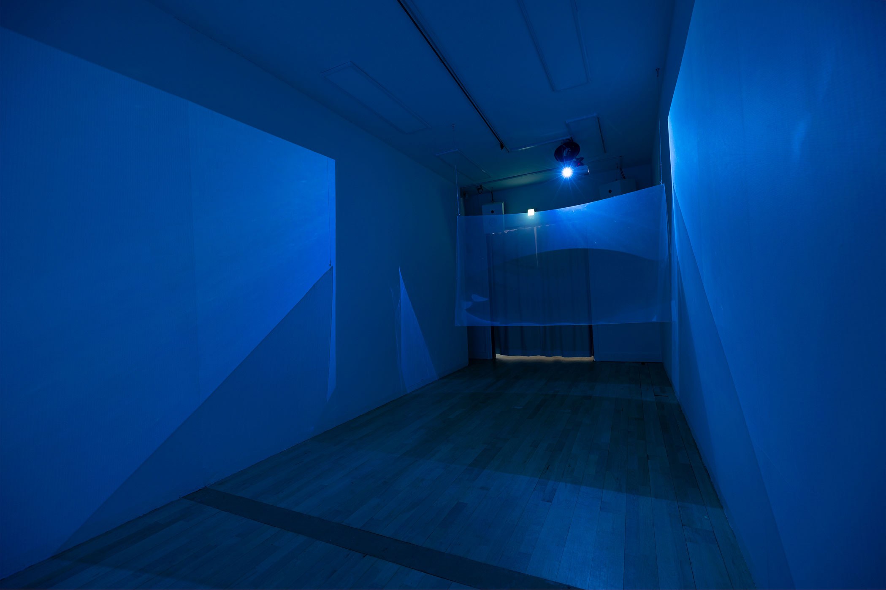
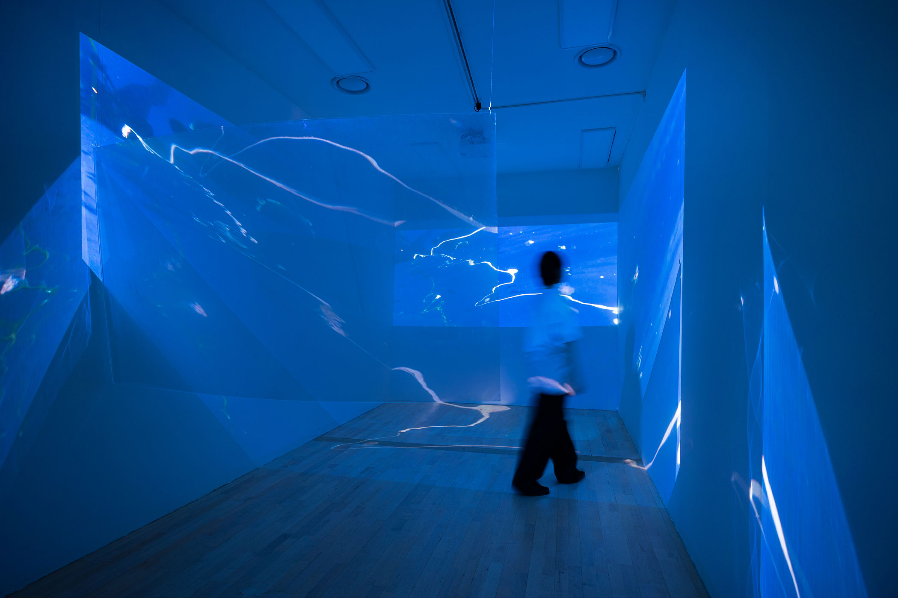

Films:
Nose dive
‹하강›
복합설치영상, 반투명 스크린, 프로젝터 2대, 4채널 스피커, 2022.
‹Nose dive›
installation video, a translucent screen, two projecters, 4-channel speaker, 2022.




파도처럼 표류하는 기억 감각 느낌 아래 수직으로 하강하기
경계에서 진동하는 이미지와 정오의 접점을 이루는 심연,
그 무언가를 보여주려는 의지 없는 시점으로 하강하는 이미지에 관하여
인간을 넘어선 유기체적 차원에서 시청각적 이미지를 바라볼 수 있을까
어떠한 의도를 반영하지 않은 카메라의 시점으로 바라보기
배가 바다의 표면을 경험하기 위한 미디어라면 바다 내부로 진입하기 위해선
몸은 스스로 인공-자연 매개물이 되야 한다.
인류세의 시점에서 벗어나기.
디지털, 국가, 미래, 정보의 넘쳐나는 은유와 몰입의 바다, 환경적 미래를 가늠하는 표류에서 벗어나 미디어 내부로 들어갈 때 목격되는 그 무엇에 주목한다.
Drifting like waves, descending vertically under the sense of memory
About the image that vibrates at the boundary and the abyss that forms the point of contact of noon, an image that descends to a point of view without the will to show something
Can we look at audiovisual images from an organic dimension that goes beyond humans?
Looking from the point of view of a camera that does not reflect any intention
If a ship is a medium for experiencing the surface of the sea, then in order to enter the inside of the sea, the body must become an artificial-natural medium itself.
Escape from the point of view of the Anthropocene.
We focus on what is witnessed when we enter the inside of the media, escaping from the overflowing metaphors and immersive sea of digital, nation, future, and information, and the drift that measures the environmental future.